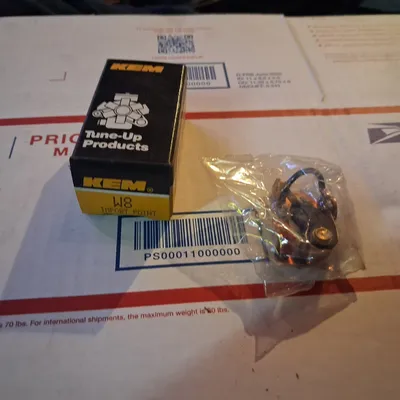
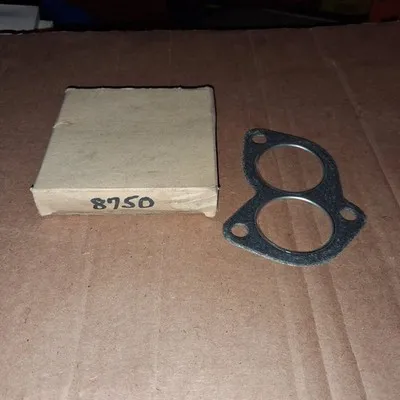
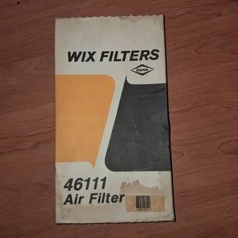

Ignition Points
1966-1979 KEM W8 Ignition Points Volkswagen Beetle Volvo 244 BMW 2002 2000 1800
W8
Fits 1975 Volvo 244 · 1969-1974 Volvo 142 (742 listed)
$21.99
View details11 parts whose listing names at least one Volvo vehicle, mostly ignition & tune-up, engine parts and oil filters. Fit depends on year, model and engine, so check the full vehicle list on each part page or message us before you buy.
11 parts
Online checkout through Square. Ships from Carbondale, PA, or pick up by confirmed appointment only. Fitment question? Message us.

W8
Fits 1975 Volvo 244 · 1969-1974 Volvo 142 (742 listed)
$21.99
View details
W2037
Fits 1975-1980 Volvo 242 · 1975-1985 Volvo 244 (477 listed)
$12.99
View details
8750
Fits 1990-1993 Volvo 240 · 1985-1992 Volvo 740 (105 listed)
$12.99
View details
H2108
Fits 1975-1989 Volvo 244 · 1990-1993 Volvo 240 (3000 listed)
$12.99
View details
33189
Fits 2003 Volvo C70 · 1985-1986 Chevrolet Astro (510 listed)
$15.99
View details
33209
Fits 1968-1974 Volvo 144 · 1968-1974 Volvo 145 (440 listed)
$25.99
View details
67021
Fits 2000-2004 Volvo C70 · 2004 Volvo S40 (20 listed)
$12.99
View details
FCG-152
Fits 1990-1993 Volvo 240 · 1985-1986 Volvo 740 (6 listed)
$24.99
View details
GB-344
Fits 1975-1985 Volvo 244 · 1981-1984 Volkswagen Rabbit (55 listed)
$17.99
View details
46111
Fits 1990-1993 Volvo 240 · 1975 Volvo 242 (122 listed)
$30.99
View details
51311
Fits 1990-1993 Volvo 240 · 1985-1992 Volvo 740 (14 listed)
$20.99
View details